Faculty
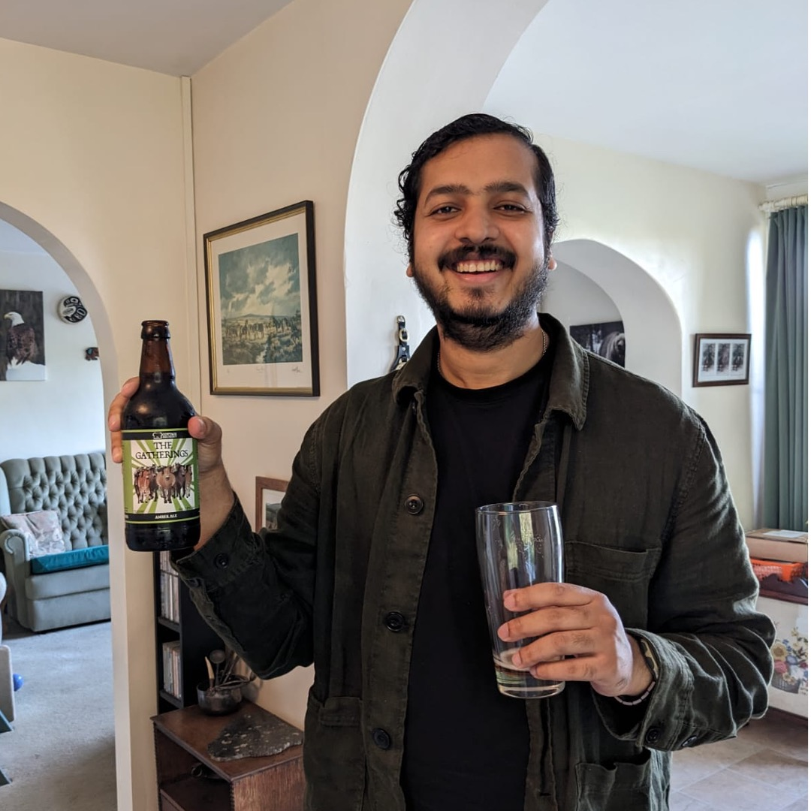
anubhabkhan@iisc.ac.in | Twitter: @Anubhab_Khan
I am interested in understanding trait evolution, extinction and survival of populations. I like developing and optimizing methods for making wildlife genomics accessible to all. I have been conducting and teaching in various workshops to train academicians, managers and conservationists in wildlife genetics. Outside of research, I enjoy travelling, sampling beers, cooking and watching movies. I enjoy poetry and philosophy.
PhD Students
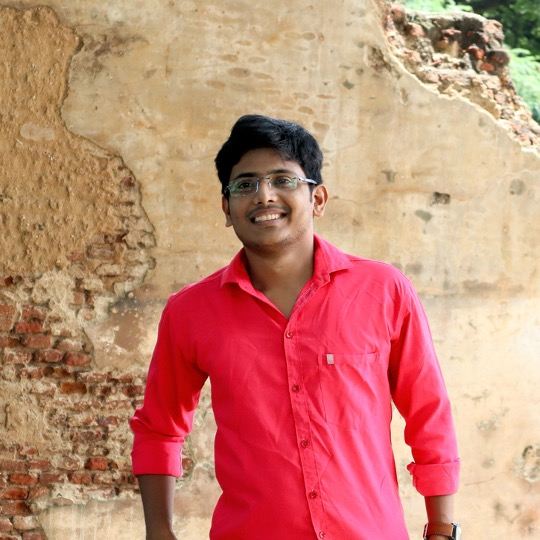
rharadhan@iisc.ac.in | Twitter: @ruidas_haradhan
I study the genomics of Indian cetaceans. My research focuses on developing a genome assembly, analysing population structure, and exploring genetic factors to inform conservation strategies for endangered dolphins in Indian waters.
Before this, I looked into microplastic accumulation in the tissues of the spadenose shark for my master's thesis, focusing on the potential impacts on reproductive organs of sharks collected from Malvan, Maharashtra.
In my free time, I enjoy cooking, hiking, painting, swimming, and crafting.
Research Interests: Population genomics, aquatic ecology, and conservation biology.
Education: BS-MS dual degree in Biological Sciences, IISER Berhampur (2023)
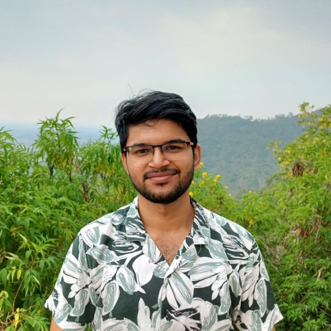
pranavdatar@iisc.ac.in | Twitter: @pranavdatar3
My fascination with wildlife started back in high school, where I used to spend time chasing birds and butterflies. They ignited my curiosity about how and why things are the way they are. This hobby gradually developed into a serious passion.
I am broadly interested in evolutionary biology, currently focusing on understanding the evolution of complex traits using size disparity in monitor lizards as a model system.
Apart from that, I enjoy philosophy, travelling, wildlife photography, watching cricket, and I am fascinated by humanity's prehistoric past.
Research Interests: Evolutionary biology, ecology, and population genomics.
Education: MSc, IISc, Bangalore (2024) | BSc, Vivekanand College, Kolhapur (2022)
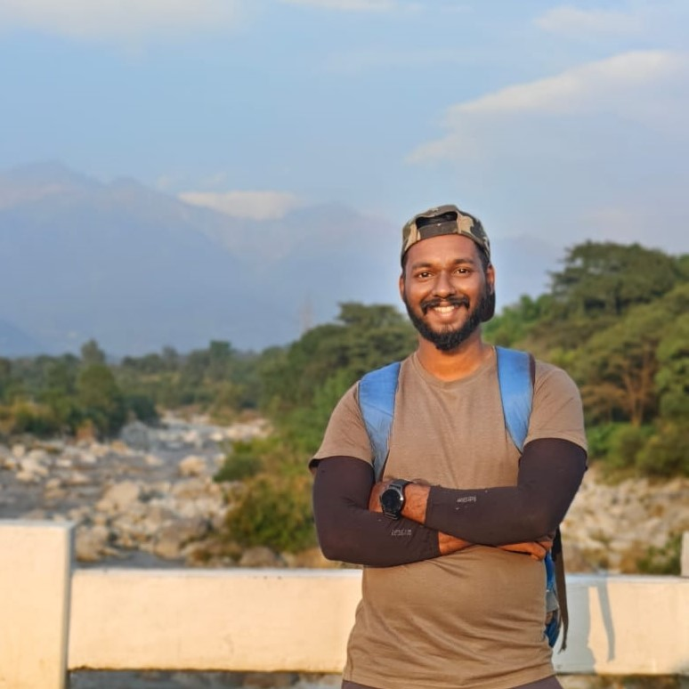
alexm@iisc.ac.in | Twitter: @alex_mahesh_
Right from my childhood days I have been fascinated by the beauty of nature, wildlife, and the variety of life forms found around me. With the Nipah virus outbreak in Kerala in 2018 and the later COVID-19 pandemic pointing towards bats, I developed a curiosity for zoonotic diseases and bats.
As a PhD student in the lab, I will be working on Kolar Leaf-nosed bats. Prior to joining the lab, I had been lucky to work in a variety of landscapes from the Eastern and Western Ghats, Central India and the mid-Himalayas.
Besides academia, I play all sorts of outdoor games, with hockey and basketball being my favourites.
Research Interests: Evolutionary biology, disease ecology.
Education: Integrated MSc Biology, NISER Bhubaneswar (2022)

anuchittawar@iisc.ac.in
My research will focus on understanding the inheritance of quantitative traits in wild populations of tigers and developing ML models to extract morphometric traits from photographs and videos.
In my free time I like reading philosophy, cooking, sleeping and generally lazing around. Prior to joining the lab I have worked with Snowflake Yeast and M. xanthus, studying the evolution of symbiosis and the evolution of antibiotic resistance.
Research Interests: Evolutionary Biology, Major Transitions in Evolution, Quantitative Biology.
Education: BSc and MSc in Biology, IISc Bangalore (2026)

diwarg@iisc.ac.in
The evolution of complex traits resulting in multiple phenotypes from a small set of genes through regulatory mechanisms is fascinating. I am studying this through the evolution of cancer resistance/susceptibility in cetaceans.
Outside of work I am interested in having lots of tea, drowning in my own thoughts and crochet!
Research Interests: Evolution, epigenetics, systems biology, plant biology.
Education: B.Sc. Biotechnology, Shiv Nadar University

I believe that nature and organisms mould each other with time. I want to understand how this differentiates physiological traits in the context of diverse hunting patterns in closely related species through the lens of genomics.
I love working with large datasets and am curious to observe new patterns and interpretations from them. I am also passionate about singing.
Int. PhD Students
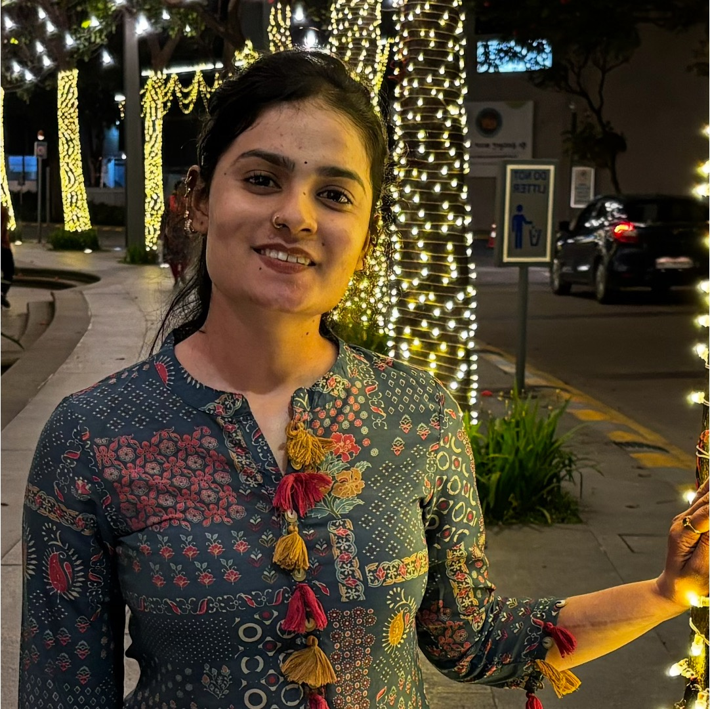
aayushigupta@iisc.ac.in | Twitter: @aayushigupta901
I am currently pursuing MS under the Integrated PhD (MS PhD) programme in Biological Sciences in the Division of Biological Sciences. I am fascinated by how nature has shaped biodiversity over time, which drives my interest in population genomics and conservation biology.
I am exploring the genomics of the cat family, focusing on studying hybridisation in the cat family to develop effective conservation strategies for endangered wild cats.
In my free time, I love trekking, swimming, playing foosball, table tennis, travelling, and cooking.
Research Interests: Population genomics and conservation biology.
Education: BSc in Biosciences, University of Maharani College, Jaipur, Rajasthan (2021)
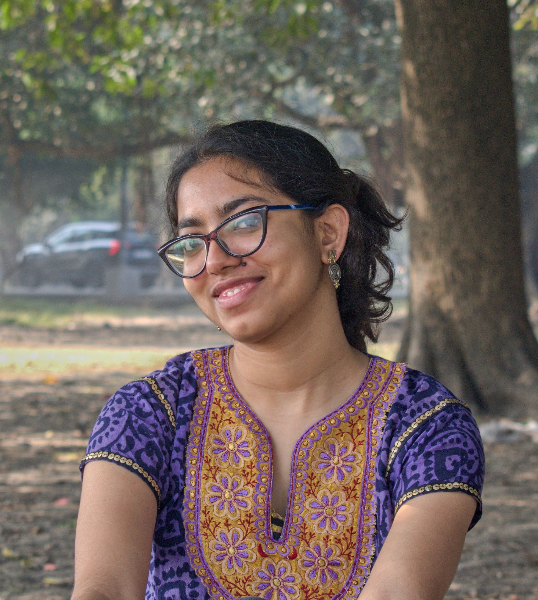
sakhikundu@iisc.ac.in
Evolution has always intrigued me by the way it has the power to shape the natural world. Questions like "Can we predict how a particular trait will change?" drive my research interests.
My research focuses on understanding how natural selection shapes genomic variation in wild populations. Using the Olive Ridley turtle (Lepidochelys olivacea) as a model system, I investigate mutation tolerance across genes, temporal and spatial variation in selection, and the impact of environmental change on genetic architecture.
Apart from academia, I value spending time with my loved ones, exploring wildlife, humming Rabindrasangeet, and just lazing around.
Research Interests: Evolutionary biology, population genetics, conservation.
Education: BSc in Life Sciences, Presidency University, Kolkata (2024)
Project Staff
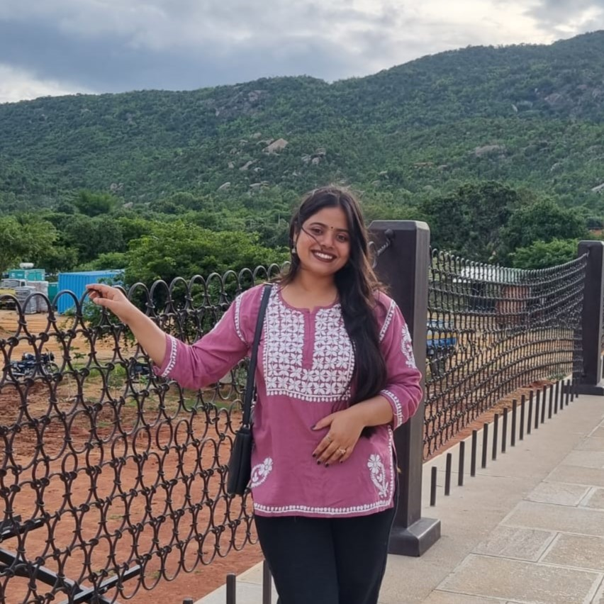
akanchasinha@iisc.ac.in | Twitter: @SinhaAkanchaa
Growing up, I was always the curious child in the family and my fascination with Biology and the natural world was fueled by watching Nat Geo. Animals, nature, and the intricacies of how life adapts and evolves captivated me early on.
Inspired by Darwin's principle of "Survival of the Fittest", I chose this dynamic lab as the ideal place to kickstart my journey as a researcher. My work here allows me to dive deep into Evolutionary Biology and Genetics.
Outside the lab, you'll find me in my kitchen, singing while cooking food that I like. I spend my weekends doing cafe hopping with my sister.
Research Interests: Evolutionary Biology, Genetics, Population Genomics.
Education: MSc Biotechnology, Dr. D.Y. Patil Vidyapeeth, Pune (2024) | BSc Hons. Biotechnology, M.S. Ramaiah University of Applied Science, Bangalore (2022)
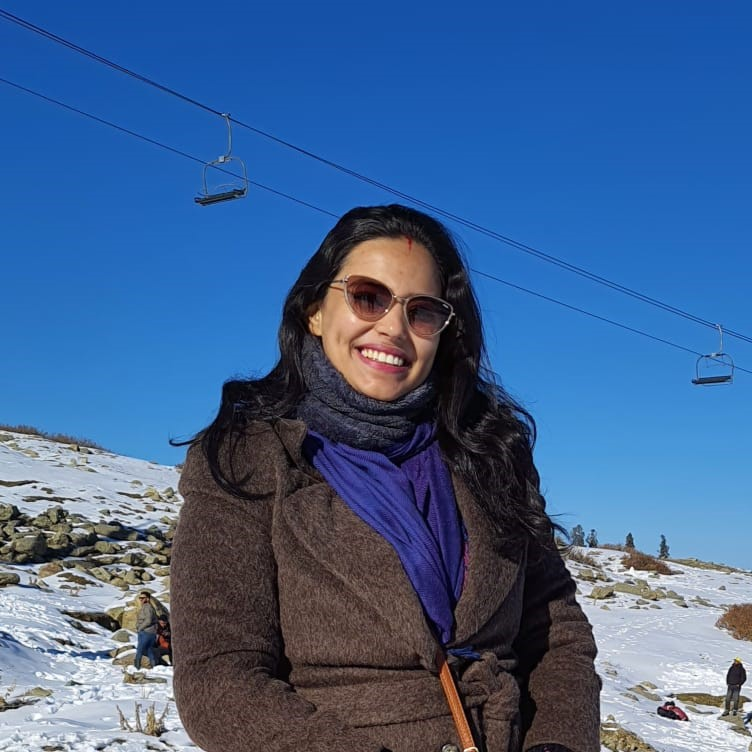
prarthana.goswami83@gmail.com
I am a molecular ecology and taxonomy enthusiast. I am pursuing my PhD on molecular taxonomy and ecology of Lepidoptera, with a particular interest in systematic revision, cryptic species, variation and polymorphism of brown butterflies, especially from the subfamily Satyrinae.
My field of study is the Northeast region of India. In the molecular wet lab, I have also worked with a variety of taxa, including non-invasive samples from vertebrates and invertebrates.
Education: M.Sc. Biotechnology, North Eastern Hill University (2018)
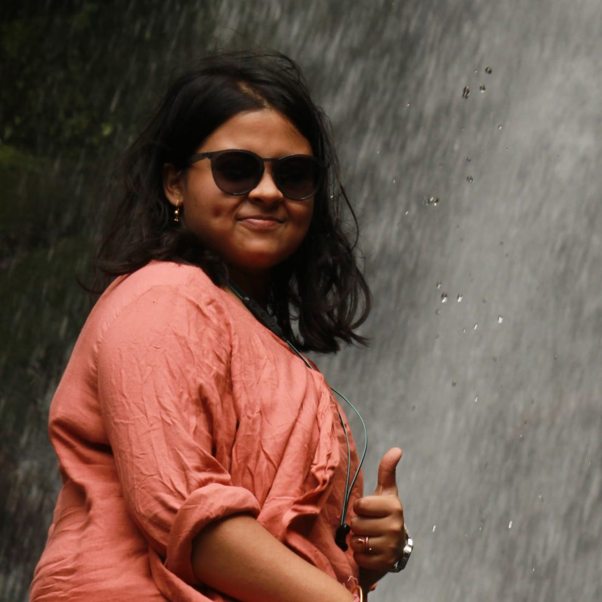
anusrita.dutta2026@gmail.com
Hello, I'm Anusrita Dutta. Coming from a social science background, I initially felt like an "invasive species" on my first day in the lab. However, with time, I have been making efforts to gradually adapt to this new environment.
My primary interest lies in examining the social science dimensions of wildlife, how humans and non-humans interact with each other, with a particular interest in tigers. One of my aspirations is to observe all Panthera species in the wild.
Research Interests: Human-Non-Human Interaction, Environmental sustainability and climate change mitigation.
Education: M.A. in Ecology, Environment and Sustainable Development, TISS Guwahati
People from Collaborations
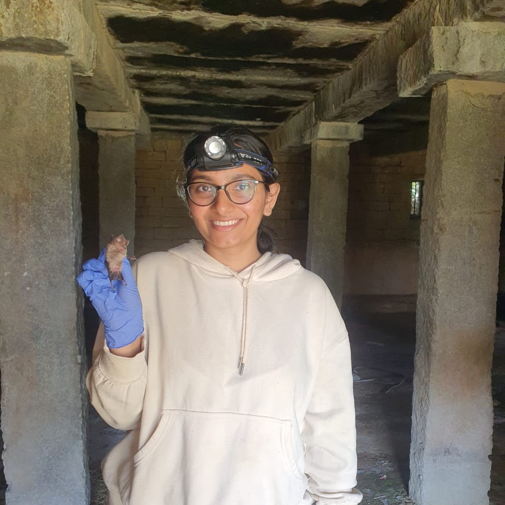
chougulebramhi@gmail.com
Understanding the genetic makeup and population dynamics of endangered species is crucial for their conservation. My research focuses on the population genetics of the endangered Kondana Soft-furred Rat.
By studying population size, gene flow, genetic differentiation, genetic diversity, and inbreeding, I aim to gather insights that will aid in the protection and management of this species.
Research Interests: Population genetics, Conservation genetics, Phylogenetics, Ecology and Evolution.
Education: MSc in Biotechnology, Jain University, Bangalore (2022)

apoorva.sodhi@cwsindia.org | Twitter: @apoorva_sodhi
My interest in wildlife began with a fascination for animal behaviour and developed into a broader interest in ecology and conservation. With a background in Zoology, Wildlife Sciences and Biosciences, my research lies at the intersection of freshwater ecology, molecular ecology and conservation, with otters at the centre of much of my work.
I am currently a doctoral fellow at the Centre for Wildlife Studies and am collaborating with PoODL on research assessing otter population health across freshwater landscapes in India. My work integrates ecology, population genomics, diet and gut microbiome analyses to understand how otter populations respond to ecological variation and human-modified environments.
Outside research, I enjoy photography, dance, music, travelling, hiking and exploring new places.
Research Interests: Conservation genomics, molecular ecology, population genetics, freshwater ecology, and human-wildlife interactions.
Education: MRes, Cardiff School of Biosciences, Wales (2024)

My work with the Wildlife Conservation Trust (WCT) focuses on applying molecular approaches to wildlife conservation. I have been involved in developing an environmental DNA (eDNA)-based approach for the detection of freshwater turtles.
I am now focusing on developing a LAMP-based assay for rapid, field-based detection, with the aim of making molecular tools more accessible and practical for wildlife monitoring and conservation.
Apart from academics, I enjoy trying new hobbies and exploring new things.
Research Interests: Conservation genetics, environmental DNA, molecular ecology, and field-based molecular diagnostics.
Education: MSc in Genomic Science, Central University of Kerala (2023)
Personnel Liaison
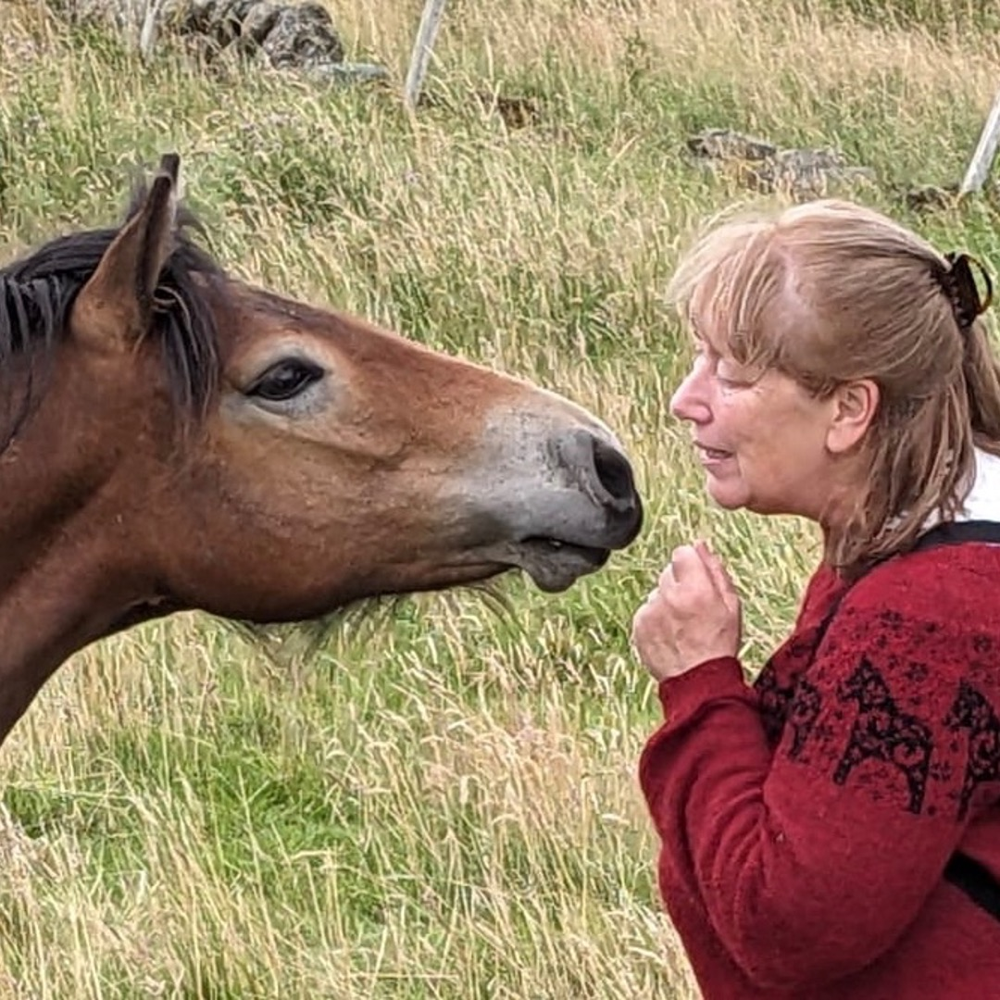
debbie.exmoors@yahoo.com | Twitter: @deborahdavy5
The majestic horse is Killbride. Deborah will introduce herself soon.
Education: PhD, University of Glasgow (2024)
Post-doctoral Researchers

pandabiswajit22@gmail.com | Twitter: @Biswajit_Sci
I am broadly interested in evolutionary, comparative, and conservation genomics, with a focus on understanding genome evolution, gene family diversification, adaptation, and biodiversity across lineages.
During my PhD at IISER Berhampur, I studied gene family evolution and chemosensory systems in diverse animal lineages, using genome assembly, annotation, phylogenomics, and comparative genomics.
At PoODL, IISc, I am extending these interests to conservation genomics, investigating evolutionary history, genetic diversity, and the persistence of threatened wildlife populations.
Beyond research, I enjoy travelling, exploring nature and cultures, reading, writing, and engaging in science communication and community-oriented initiatives.
Research Interests: Evolutionary Genomics, Comparative Genomics, Conservation Genomics, Genome Evolution, Gene Family Evolution, Phylogenomics.
Education: Ph.D. in Biological Sciences, IISER Berhampur (2026) | M.Sc. in Zoology, OUAT, Bhubaneswar (2018)
Lab Manager
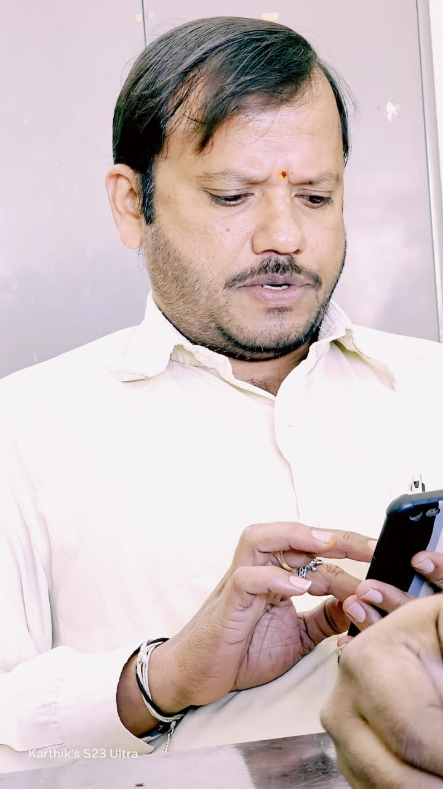
Current Interns
- Kushan
- Preshtha
- Usha — Biowise Program
Past Members
Post-docs
- Azhar Rashid Lone — Google Scholar
Project Staff
- Azhar Rashid Lone
- Meenakshi R
- Nithin KA
- Ramya Roopa S
Thesis / Dissertation Students
- Jyoti Prakash Mohanty — MSc Biotechnology, 2026, Fakir Mohan University, Balasore
- Abinash Rudrasankar Sahoo — MSc Biotechnology, 2026, Fakir Mohan University, Balasore
- Radhika Soni — MSc Biotechnology, 2026, Devi Ahilya Vishwavidyalaya, Indore
- Pallavi B — MSc Bioinformatics, 2026, JSS Academy of Higher Education and Research, Mysuru
Interns
- Teja — Biowise Intern · BeST · 2026
- Fathima — DISHA Intern · DAE · 2026
- Keerthika Chavali — INSPIRE-SHE Intern · DST · 2026
- Paritosh Sharma — CSTUP Summer Research Fellow, UP Government · 2025